Group Member: Wendy Wang
1/29: assn1.png: Scene with 2 spheres, a floor, a light source, and a camera.
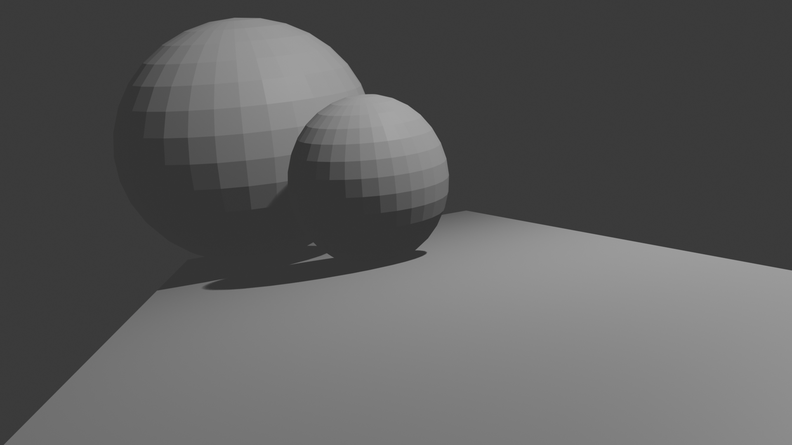
2/6: assn1.png was replaced by assn1_new.png because the former one has tough values of parameters, causing trouble in coding
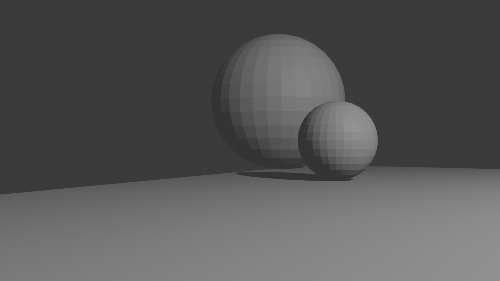
2/6: assn2.png
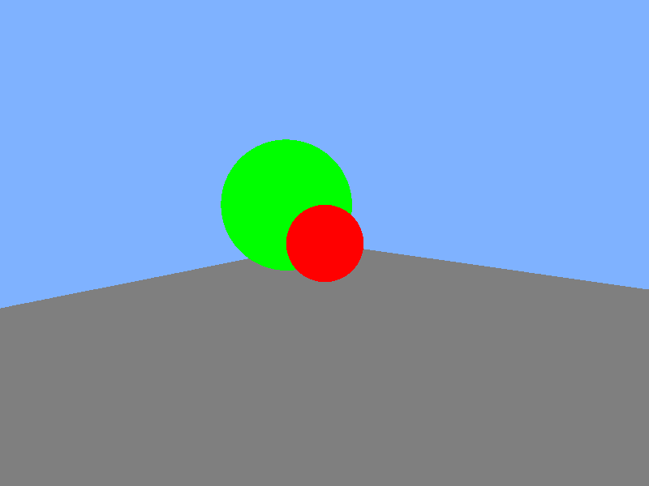
2/18: assn3.png
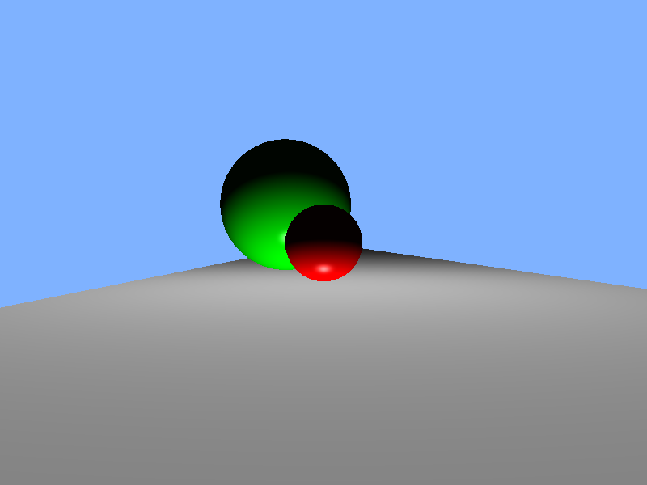
3/4: assn4.png
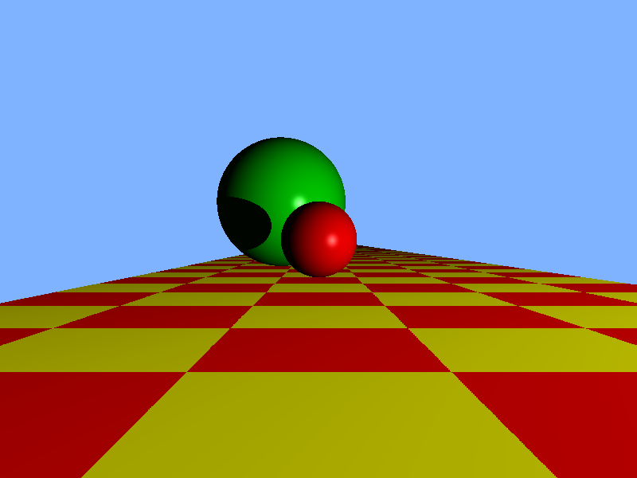
4/3: assn5.png
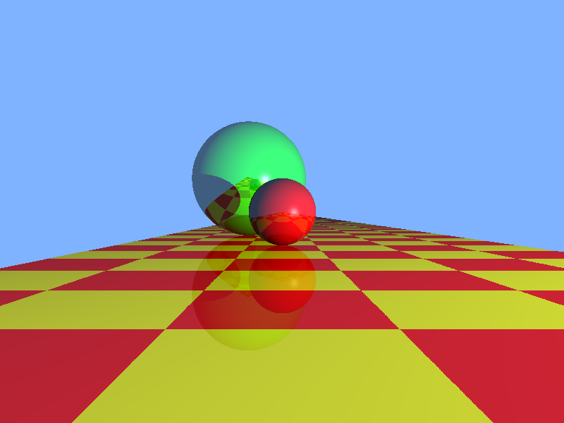
4/3: assn6.png
hopefully I fix the shadow problem
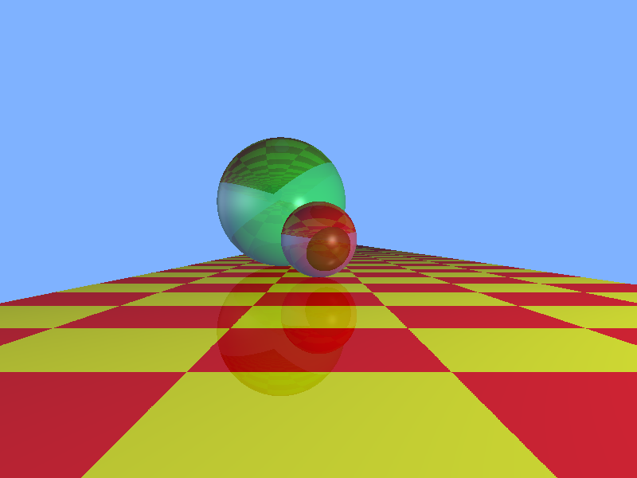
5/2:
ward_lo.png
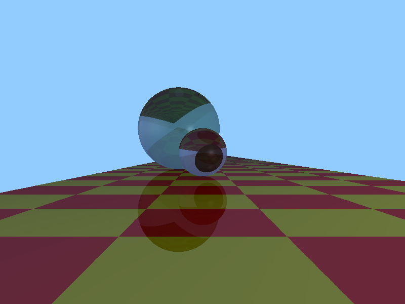
ward_mid.png
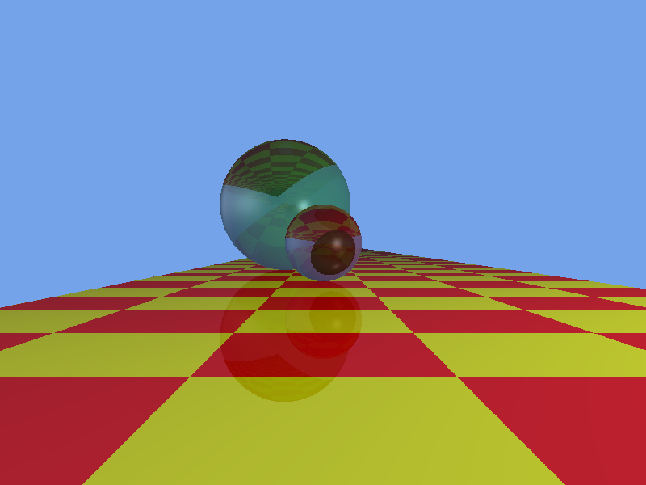
ward_hi.png
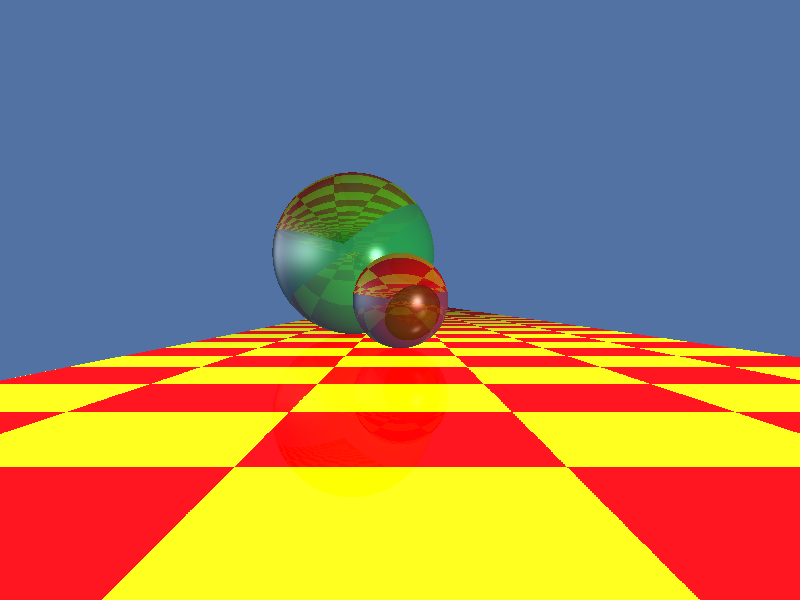
reinhard_lo.png
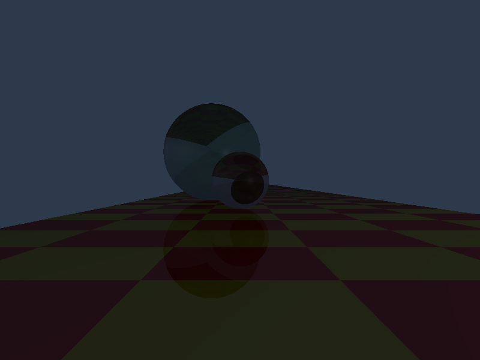
reinhard_mid.png
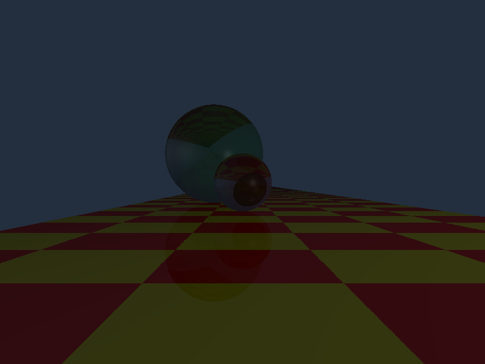
reinhard_hi.png
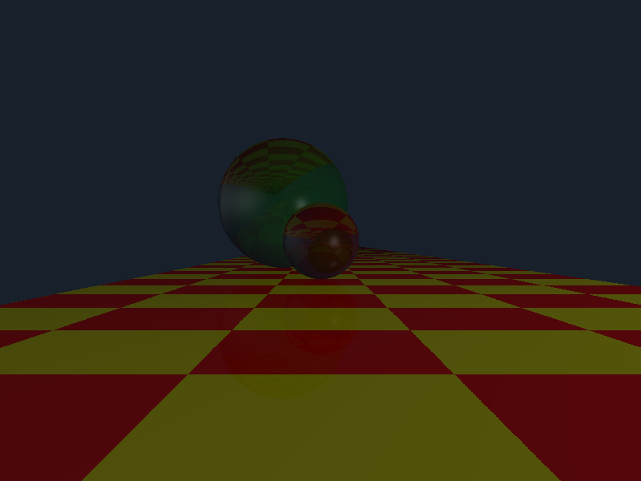
5/2: bunny_kdtree.png
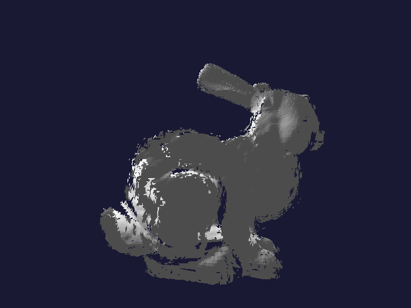
kd-tree build time: 2.53707 sec
kd-tree render time: 2.86041 sec
Brute force render time:83.1939 sec
Speedup: 29.0846x